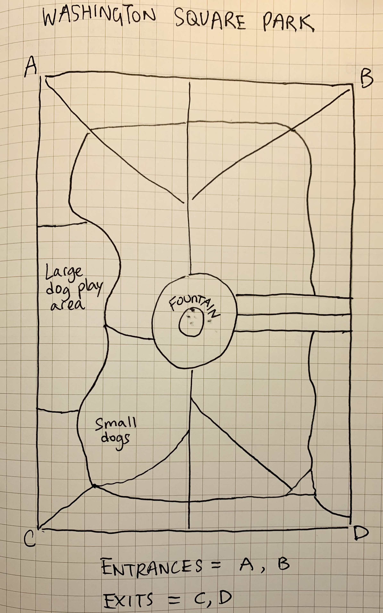

Question
How to create an immersive, unique yet educational experience about vision impairment for young adults?
Conceptualization
Inspired by the concept of
Transmedia Storytelling -
telling the same story in different forms that eventually
emerge and become a whole and unique experience. I wanted to explore this concept with my research question by
connecting physical and digital media.
I believe this technique would be appealing to young adults since it encourages the use of multiple senses,
technologies, and media all at once, letting the audiences to be explorative.
Keywords: exploration, collaboration, senses, immersive, experience, interactive
Development
This two-person interactive experience will be conducted in a park. The goal is to navigate through and
eventually exit the park. Your friend can help you by
giving you hints related to smell or sound. However, you may not give any sort of directional guidance (left,
right, clock position, etc).
You have to complete this experience relying on your auditory and olfactory
senses.
The prototype will include three parts:
- Bose AR Audio sunglasses
It resembles the look and feel of regular sunglasses. However, it does have audio support that allow you to
communicate with others through the device.
- Various types of vision filters. The user will not be able to see anything clearly but will still have light
perception (simulating legally blind).
- A friend!
IMPORTANT RULES
-
No directional guidance!
-
No physical contacts!
Outcome

This is a simple outlined map of the park that labeled a few types of noises that exist within the park. It also
indicates the starting and endpoint, so you can plan your route as you guide your friend through the park.
A total of 4 teams will start at the same time, and whichever team exits the park first wins.
At the end of the activity, people can share what helped them navigated through the park, was it sensory? Or was
it helpful hints from the guidance friend? Now reverse the roles and go through the experiences again. Was it
easier this time around?
Reflection
I think the activity by itself is an interesting collaborative interaction that involves problem-solving and
reflection. The objective of this activity is to make people become aware that vision impairment may
seem
like an extreme inconvenient at first, but you will eventually realize that when your other senses have been
highlighted, you can operate just as fine. This activity is sought to help reduce false sympathy towards the
vision impaired population.